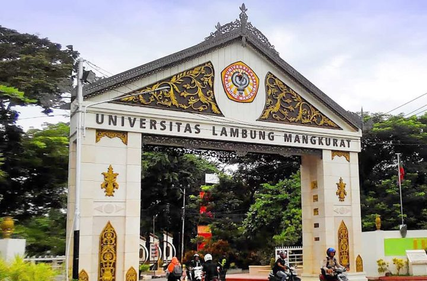
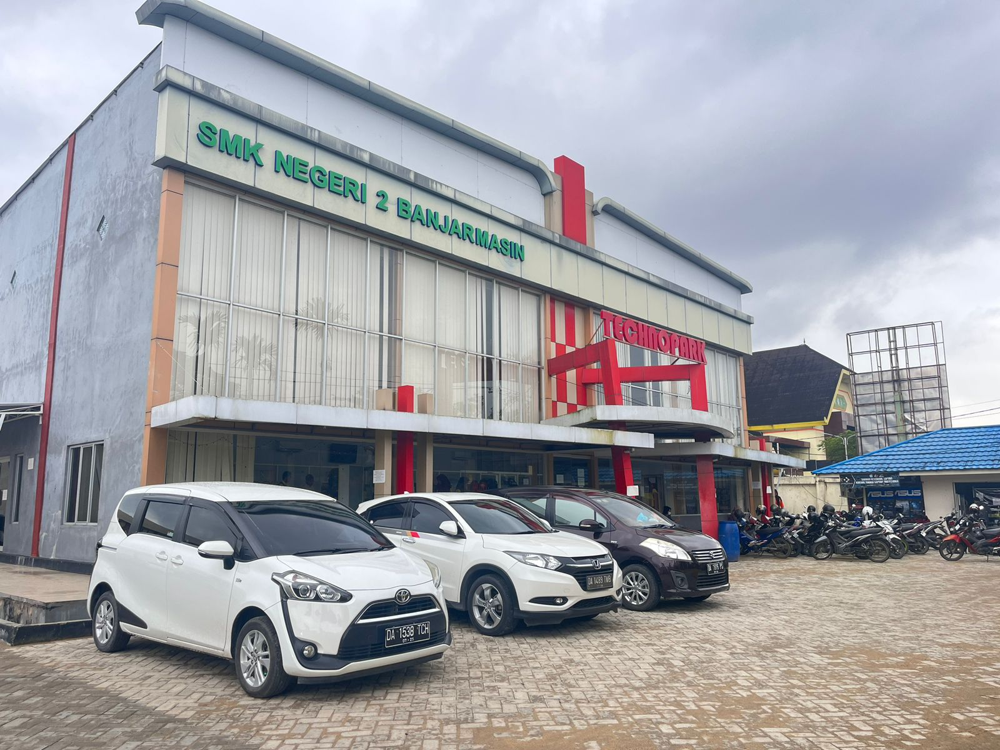
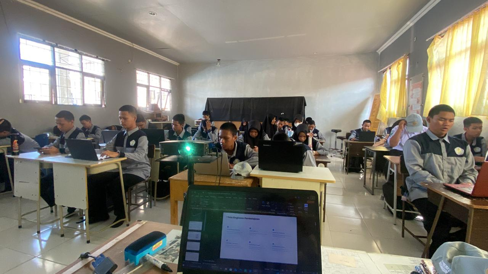
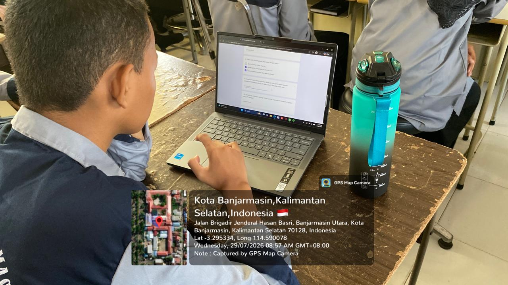
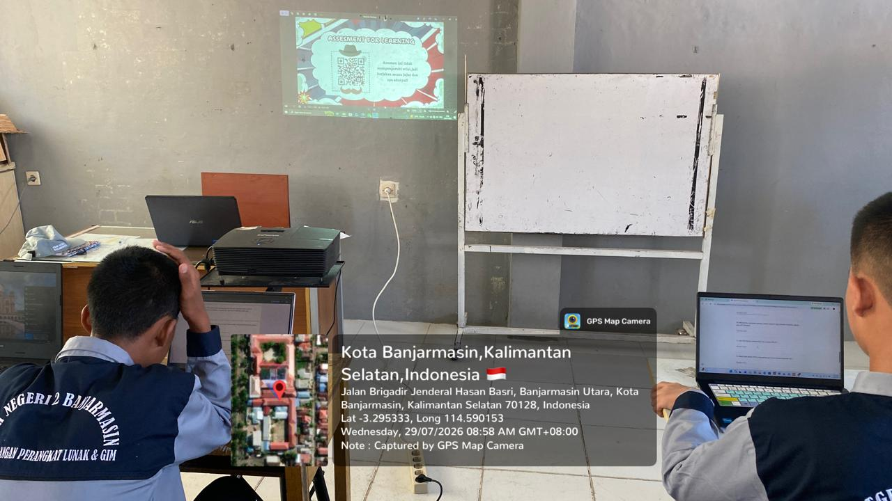
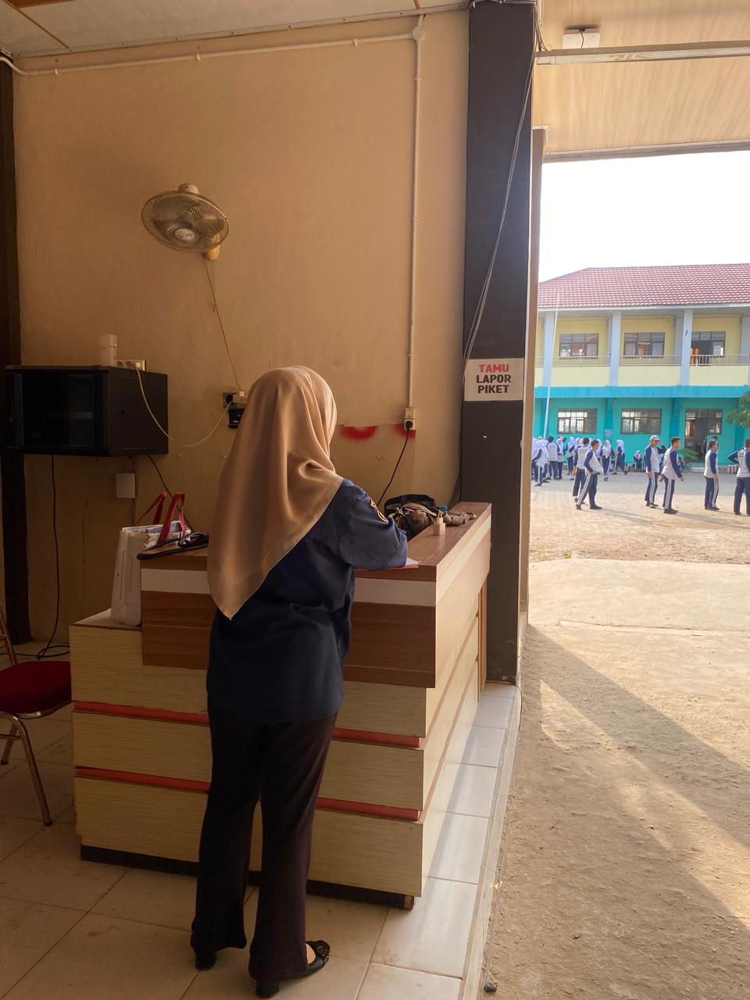
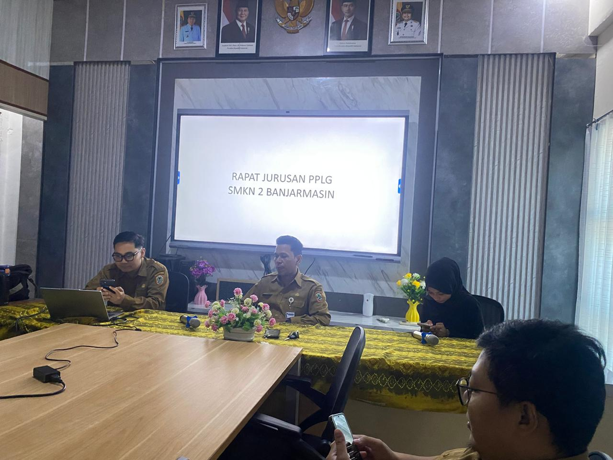

Perkenalkan, nama saya Allip Ma’rup Syahbana, berasal dari Kota Amuntai, Kabupaten Hulu Sungai Utara, Kalimantan Selatan, memiliki hobi bermain voli, dan ke depannya saya ingin menjadi guru yang inspiratif, kreatif, sabar, serta mampu menciptakan pembelajaran yang menyenangkan dan bermakna bagi peserta didik.

Universitas Lambung Mangkurat (ULM)
Universitas Lambung Mangkurat adalah salah satu perguruan tinggi negeri terkemuka di Kalimantan Selatan. Kampus ini memiliki beberapa lokasi, dengan kampus utama terletak di Kota Banjarbaru, serta kampus pendidikan di Banjarmasin. ULM menjadi tempat saya menempuh pendidikan sebagai calon guru profesional, membekali saya dengan ilmu pedagogik dan kompetensi keahlian di bidang teknologi informasi.

SMK Negeri 2 Banjarmasin
Sekolah ini merupakan salah satu SMK Negeri favorit di Kota Banjarmasin yang memiliki berbagai jurusan, salah satunya adalah Pengembangan Perangkat Lunak dan Gim (PPLG). Saya melaksanakan Praktik Pengalaman Lapangan (PPL) Mandiri di sekolah ini sebagai wujud implementasi ilmu yang telah saya pelajari di bangku kuliah, khususnya dalam mengajar mata pelajaran Sistem Operasi.
Modul ajar berjudul Orientasi dan Konsep Dasar Sistem Operasi disusun untuk kelas X (4 JP / 180 menit). Rancangannya menggunakan pendekatan Deep Learning dan Saintifik dengan model Discovery Learning. Kegiatan intinya mengikuti enam sintaks Discovery Learning: stimulation, problem statement, data collection, data processing, verification, dan generalization.
Tujuan pembelajaran selaras dengan kegiatan dan asesmen, dan dikembangkan melalui dimensi profil lulusan Penalaran Kritis dan Komunikasi. Target SOLO-nya adalah level unistructural, yang sesuai untuk pertemuan orientasi. Kekuatan modul ini adalah alokasi waktu yang rinci dan pertanyaan pemantik yang mendorong penalaran. Yang perlu diperbaiki adalah diferensiasi bagi peserta didik dengan kemampuan berbeda, serta target SOLO yang bisa dinaikkan ke level multistructural karena LKPD sudah meminta tiga fungsi OS.
Refleksi:
Dalam menyusun modul ini, saya belajar bahwa perencanaan yang runtut sangat membantu jalannya pembelajaran, terutama saat membagi waktu per tahap Discovery Learning. Saya juga menyadari bahwa rancangan yang baik tetap harus fleksibel. Pada penyusunan berikutnya, saya akan menambahkan diferensiasi, menyelaraskan target SOLO dengan tuntutan LKPD, serta memasukkan kegiatan praktik agar peserta didik tidak hanya memahami konsep tetapi juga melihat langsung penerapannya.
Materi mencakup pengertian OS, fungsi utama, serta analogi “manajer restoran”. Materi ini ada di Lampiran 2 modul ajar dan di bahan ajar lengkap. Lampiran 2 memuat 5 fungsi utama OS (proses, memori, perangkat, berkas, antarmuka). Bahan ajar lengkap memperluasnya menjadi 7 fungsi, dengan tambahan keamanan dan jaringan, serta GUI vs CLI, perbandingan Windows/Linux/macOS, dan sejarah OS. Urutan materi sistematis, dari konkret ke abstrak, dan bahasanya sesuai untuk kelas X. Analogi restoran membantu peserta didik memahami konsep yang abstrak.
PPT: Isinya mengikuti alur modul ajar: identitas, tujuan, apersepsi, stimulasi (perbandingan komputer tanpa OS dan dengan OS), instruksi diskusi LKPD, pengertian, analogi, dan arsitektur berlapis. Tampilannya rapi dan konsisten, dengan ikon dan diagram yang membantu visualisasi. Teksnya ringkas, sehingga cocok mendukung penjelasan guru. Kekurangannya, belum ada unsur interaktif seperti kuis atau video.
LKPD: Memuat 5 pertanyaan yang berjenjang: analisis kasus, konsep dasar, fungsi OS, penalaran kritis, dan pertanyaan lanjutan. Pertanyaan-pertanyaannya melatih penalaran kritis dan komunikasi sesuai tujuan. Petunjuknya jelas dan menyediakan ruang jawaban. Kekurangannya, belum ada petunjuk skor atau contoh jawaban yang memandu peserta didik.
Piket Guru: Kegiatan ini melatih kedisiplinan dan tanggung jawab, serta kemampuan menangani kondisi nyata di sekolah, seperti mencatat kehadiran, mengatur peserta didik, dan melayani kebutuhan siswa maupun guru. Pengalaman ini memperkuat pemahaman saya tentang tata kelola sekolah dan komunikasi dengan warga sekolah.
Rapat Guru Kejuruan PPLG: Kegiatan ini memberi gambaran tentang perencanaan pembelajaran produktif, koordinasi program keahlian, dan pengambilan keputusan bersama. Saya belajar menyimak dan berdiskusi secara profesional, serta melihat bagaimana kebutuhan industri memengaruhi kebijakan jurusan. Kedua kegiatan ini melengkapi kompetensi pedagogik dengan kompetensi kepribadian, sosial, dan profesional.
Instrumen: Lembar penilaian diskusi kelompok dan produk LKPD dengan skor maksimal 100, terdiri dari lima aspek yang masing-masing bernilai 20 (pemahaman konsep OS, pemahaman fungsi utama OS, ketepatan isi LKPD, komunikasi dan kerja sama, kerapian/kelengkapan/kedisiplinan). Bobotnya adalah proses 30% dan produk 70%.
Analisis:
Kumpulan dokumentasi saat melaksanakan praktik mengajar dan kegiatan non-mengajar di SMK Negeri 2 Banjarmasin.




